FERT - Easy feedback in real time-time
Vladut Morosanu, Razvan Hurbea
Tipuri de utilizatori
- Student - cel ce va putea da feedback in timp real profesorilor pentru o intelegere ma
buna a cursului cu pricina.
- Profesor - cel ce face management-ul cursului si are grija ca totul sa decurga conform
normelor cursului.
Profesorul:
- Isi face cont si asteapta sa fie aprobat de catre Administator.
- Dupa ce ii se aproba contul acesta se va putea autentifica in aplicatie (nu poate
folosi aplicatia daca nu
are cont).
- Poate creea o un curs unde se vor alatura studentii prezenti.
- Atunci cand profesorul acceseaza cursul creeat anterior, poate generea o cheie
unica pe care o va spune
stundetilor prezenti la curs (se elimina posibilitatea accesarii aplicatiei de catre studentii “intrusi”).
- Atunci cand se creeaza un curs in aplicatie, poate adauga alti profesori.
- Profesorul isi poate configura setarile pentru acea lasa de curs:
- numarul de voturi pentru ca o intrebare sa fie afisata in lista cu intrebari primite (procent sau
numar).
- numarul de feedback-uri negative pentru ca un subiect sa fie reluat. (procent sau numar).
- Profesorul vede lista cursurilor si poate selecta pe oricare dintre ele.
- Dupa ce a deschis un curs, va vedea lista de intrebari puse de catre studentii
aflati la acel curs.
- Va vedea numarul de stundenti conectati.
- Va vedea cheia de acces catre acel curs.
- poate adauga intrebari pentru studenti si poate ajusta:
- numarul de raspunsuri corecte pentru o intrebare pentru a se asigura ca a fost inteleasa (procent).
- timpul disponibil pentru ca studentii sa poata raspunde la acel quiz.
- va vedea lista cu studentii care au raspuns la o intrebare.
- Are un orar unde vor fi vizivile toate cursurile acestia
Studentul:
- Isi face cont si asteapta sa fie aprobat de catre Administator.
- Dupa ce a fost aprobat contul de catre Administrator, se autentifica in aplicatie
(nu poate folosi aplicatia daca nu are cont).
are cont).
- Vede lista de cursuri si va putea accesa o sala de curs pe baza cheii prezentate
de
catre profesor.
- Poate plasa o intrebare catre profesor iar aceasta va fi afisata studentilor
pentru a putea fi votata
- Poate vedea lista de intrebari si le va putea vota pentru a aparea in lista
profesorului.
- Va vedea intrebarile profesorului si va putea raspunde la acestea (nu se va putea
raspune anonim la intrebarile profesorului).
- Are un orar unde va vedea lista cu toate cursurile unde este inclus.
Design-ul aplicatiei:
Design-ul meniului:
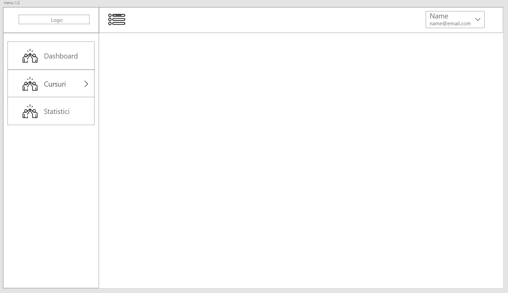
Pagina profesorului pentru Dashboard:
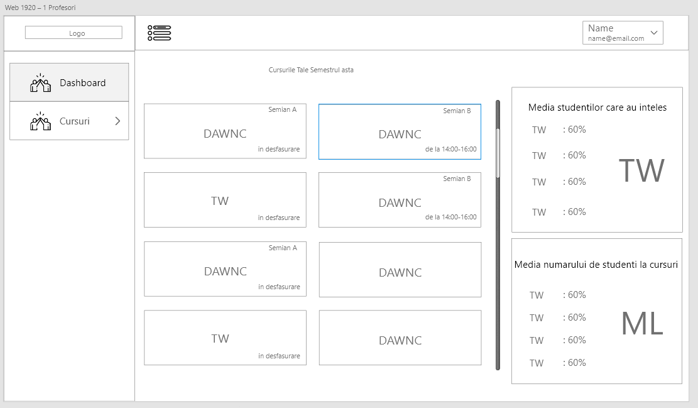
Pagina profesorului pentru adaugarea unui curs:
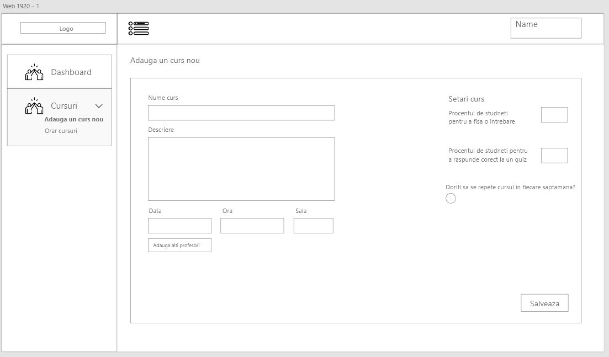
Pagina profesorului pentru poate vedea toate cursurile adaugate:
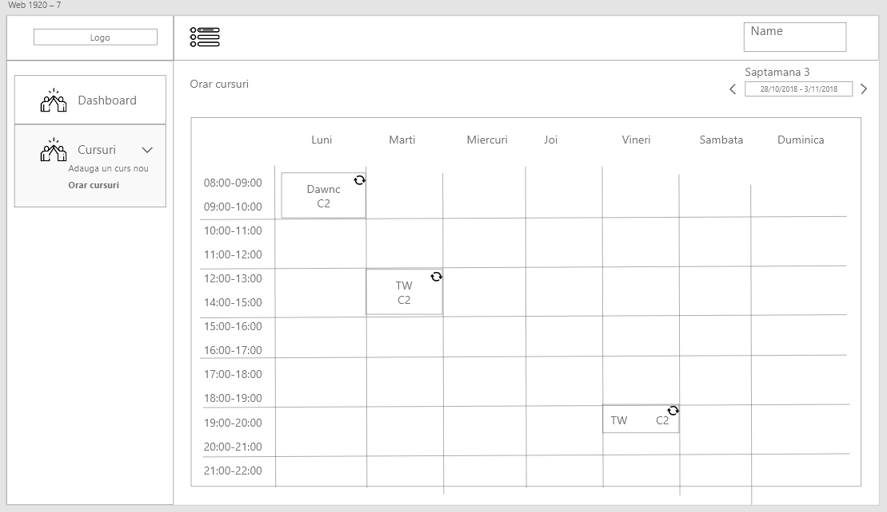
Pagina profesorului pentru un curs activ:
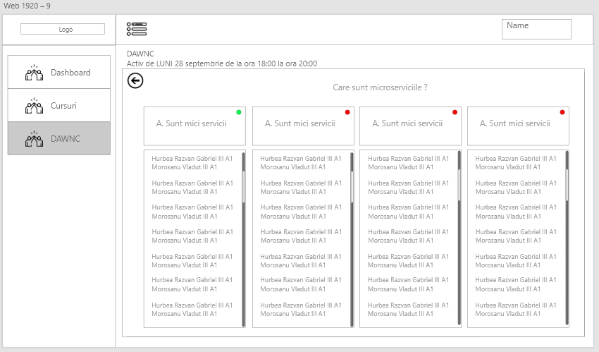
Prima pagina a studentului:
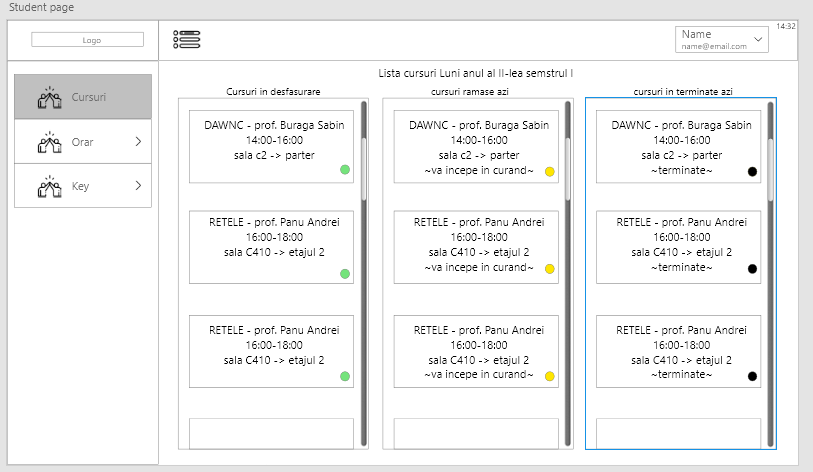
Prima studentului pentru a vedea un curs:
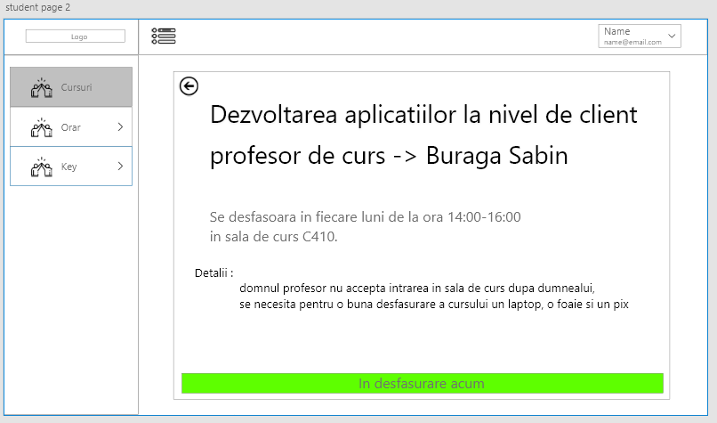
Prima studentului pentru a vedea toate cursurile la care este asignat:
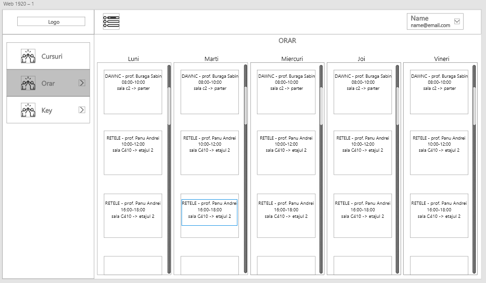
Prima cursului unde studentul este asignat:
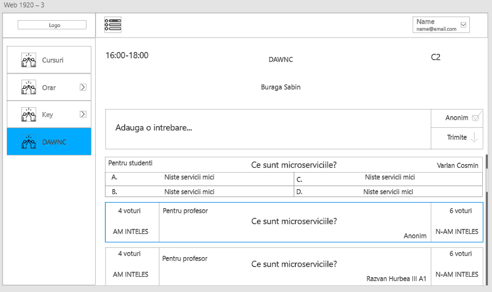
Structura proiectului:
Front-end-ul va avea 3 parti principale:
- autentificarea studentului, inregistrarea acestuia la un curs si interactiunea cu profesorul
- autentificarea profesorului, crearea cursurilor, punerea de intrebari si evaluarea raspunrusilor trimise de catre studenti
- autentificarea administratorului si gestionarea studentilor si a profesorilor
Back-end-ul va fi unul de tip serverless folosind serviciu FireBase:
- va contine API-uri ce comunica cu baza de date si returneaza obiectele catre Front-End prin paradigma REST API
Tehonologii folosite:
Pentru creearea proiectului se va folosi HTML 5 si CSS3 la nivel de Front-End iar
pentru Back-End se va folosi serviciu FireBase de la Google.
Interfata proiectului va fi separata pe componente, sectiuni din pagina ce vor functiona independent de aplicatie.
De exemplu, o componenta va avea fisierul HTML si style-ul CCS propriu, de asemenea va avea un fisier JavaScript in cazul in care
fi nevoie pentru comunicarea cu Back-End-ul.
Scenarii de utilizare:
Studentul acceseaza aplicatia si va fi directionat catre pagina de autentificare.
Daca acesta nu are un cont, va completa formularul de inregistrare si va
astepta pana cand contul va fi aprobat de catre un administrator. Dupa autentificare, va fi redirectionat catre
pagina "Acasa". Pe aceasta pagina vor putea fi vizibile
cele mai importante informatii, precum cursurile in desfasurare, cursurile din ziua respectiva si cursurile
urmatoare. Daca acesta detine o cheie de acces catre un curs,
o va putea folosi in pagina "Adauga cheie". Acesta va fi redirectionat catre pagina cursului in desfasurare
unde poate vedea lista cu intrebari ce astapta a fi votate,
poate adauga intrebari in cazul in care nu a inteles anumite asptecte si va putea raspunde la intrebarile
profesorului. Acesta mai poate accesa pagina destinata orarului unde
va vedea toate cursurile la care acesta este adaugat.
Profesorul acceseaza aplicatia si va fi directionat catre pagina de
autentificare. Daca acesta nu detine un cont, va completa formularul de inregistrare si va astepta
pana administratorul ii va aproba contul. Dupa autentificare, va fi redirectionat catre pagina acasa, unde va
vedea cele mai importante informatii, precum, cursurile acestia si
cateva statistici importante (media studentilor la cursuri si numarul de raspunsuri corecte la intrebarile
acestuia). Profesorul poate accesa pagina pentru a creea un nou curs
si il va putea configura in functie de necesitati. Dupa trimiterea formularului, nou curs va fi vizibil in
pagina destinata orarului acestuia. Pagina "Orar" detine o lista cu toate
cursurile profesorului. Un curs poate fi accesat fie din pagina orarului, fie de pe pagina "Acasa" si fa fi
redirectionat catre pagina cursul. Pe aceasta pagina, va vedea lista cu intrebari
adaugate si votate de catre studenti, poate adauga o intrebare si poate configura cursul precedent. De
asemenea, profesorul poate adauga alti profesori coordonatori catre un curs.
Diagramele arhitecturale:
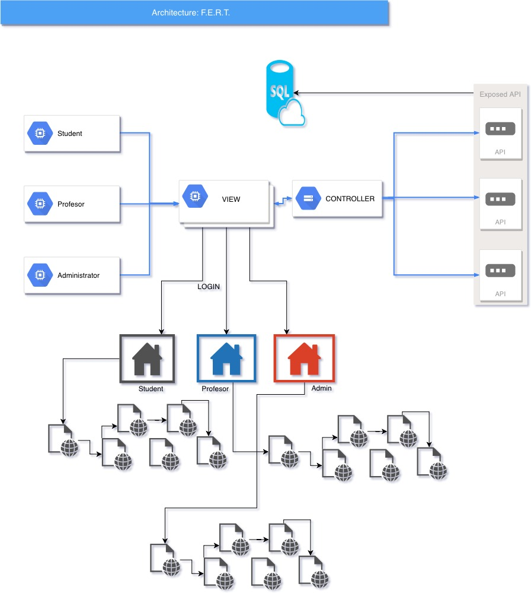
Studenti:
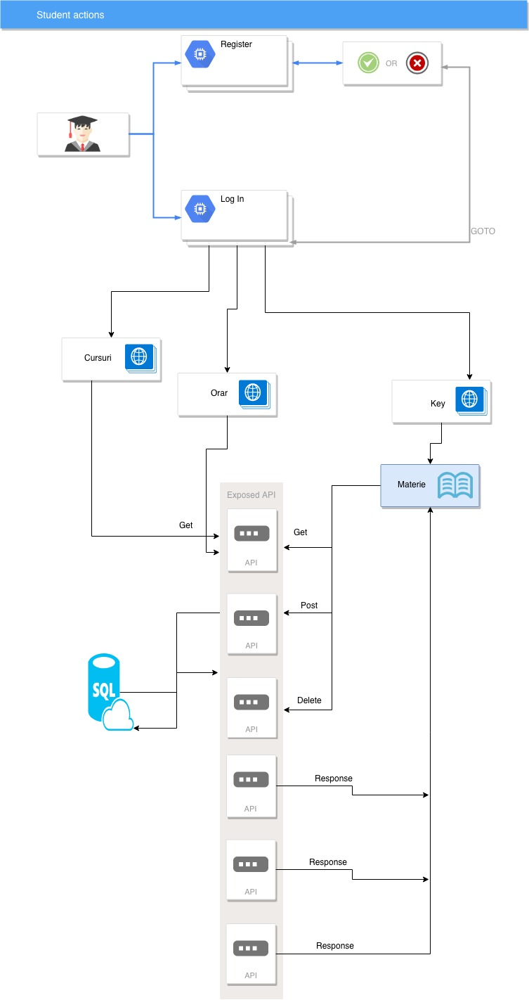
Profesori:
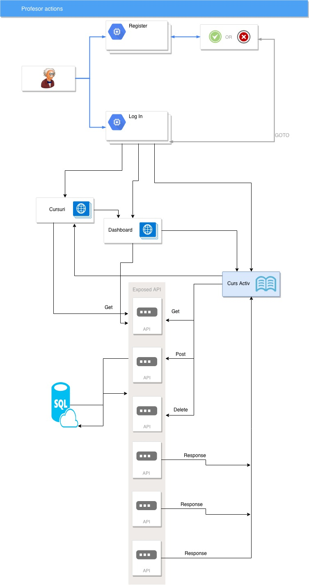
Arhitecura Bazei de Date:
Tabela Studenti:
- id : INT [PK]
- lastname: VARCHAR(30)
- firstname: VARCHAR(30)
- email : VARCHAR(50) [UNIQUE]
- group : VARCHAR(50)
- password : VARCHAR(32)
- rights : INT
- date_reqister TIMESTAMP
Tabela Profesori:
- id : INT [PK]
- lastname: VARCHAR(30)
- firstname: VARCHAR(30)
- email : VARCHAR(50) [UNIQUE]
- password : VARCHAR(32)
- rights : INT
- date_reqister TIMESTAMP
Tabela Cursuri:
Tabela Cursuri:
- id : INT [PK]
- course_name: VARCHAR(30)
- professor_id: INT [FK]
- date_course : TIMESTAMP
- classroom : VARCHAR(32)
- rights : INT
Tabela Intrebari:
Tabela Intrebari:
- id : INT [PK]
- question_description: VARCHAR(300)
- course_id: INT [FK]
- date_course : TIMESTAMP
- nr_understand : INT
- nr_not_understand : INT
- deleted : INT
- date_created TIMESTAMP
Tabela Quiz-uri profesori:
Tabela Quiz-uri profesori:
- id : INT [PK]
- question_description: VARCHAR(300)
- course_id: INT [FK]
- date_course : TIMESTAMP
- solution1 : VARCHAR(300)
- solution2 : VARCHAR(300)
- solution3 : VARCHAR(300)
- solution4 : VARCHAR(300)
- deleted : INT
- date_created TIMESTAMP